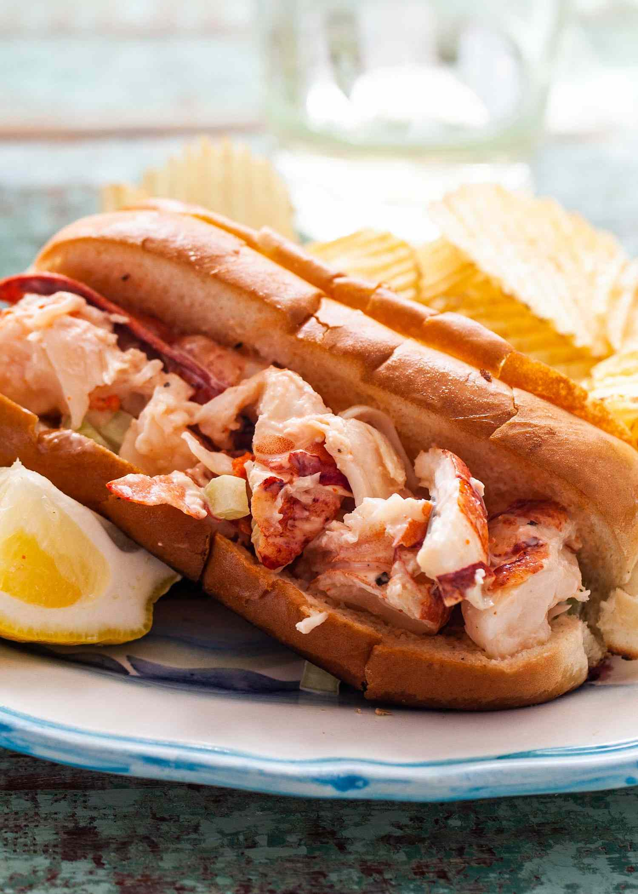

Lobster Rolls

Description
There is something so comforting about eating a lobster roll on a hot dog bun. It screams summer. It says, "Nothin’ fancy here, folks."
Lobster Rolls are an easy recipe, that is sure to make everyone enjoy it.
Ingredients
- 1 pound cooked lobster meal, cut into 1-inch pieces
- 3 tablespoons of lemon juice
- 1/4 teaspoon salt
- 1/8 teaspoo black pepper
- 1/2 cup finely chopped celery
- 1/3 cup mayonnaise
- hot dog buns
- 3 tablespoons soft butter
- lemon wedges
- potato chips
Steps
- In a bowl, stir the lobster meat, lemon juice, salt, pepper, celery and mayonnaise together. Taste and add more salt, pepper, or lemon juice if you like.
- Spread the outsides of the buns with softened butter. Set a skillet or cast iron pan over medium-high heat. Toast the buns for about 30 seconds on each side, or until golden brown.
- Fill each bun with the lobster salad. Serve with potato chips and a wedge of lemon.